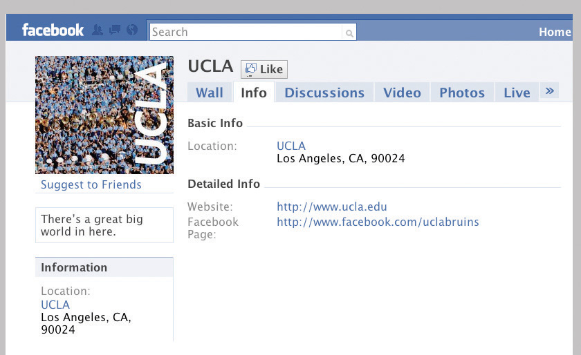

Humans are social creatures—it’s simply in our nature. We continually interact with other students and instructors, and we can learn a great deal from these interactions that heighten the learning process. This frequent interaction with others forms a state of interdependence. College students depend on their instructors, but just as importantly, they depend on other students in many ways.
As important as our interactions with others are, we do not automatically possess the skills that help us form good relationships and make the most of our experiences. Consider how these two college students are different:
John often arrives just as class is beginning and leaves immediately afterward. He makes little effort to talk with other students in the classroom, and after class he goes off to study alone or to his part-time job, where he spends most of his time at a computer screen. He is diligent in his studies and generally does well. After two months, he has not gotten to know his roommate very well, and he generally eats alone with a book in hand. He stops by to see his instructors in their offices only if he missed a class due to illness, and on weekends and holidays he often hangs out at his parents’ house or sees old friends.
Kim likes to get to class early and sits near others so they can talk about the reading for class or compare notes about assignments. She enjoys running into other students she knows from her classes and usually stops to chat. Although she is an older working student who lives alone off campus, she often dines in a campus café and asks students she meets in her classes to join her. After two months, with the approach of midterms, she formed a study group with a couple other students. If she feels she doesn’t understand an important lecture topic very well, she gets to her instructor’s office a few minutes ahead of office hours to avoid missing out by having to wait in line. A few weeks into the term, she spent a weekend with a student from another country and learned much about a culture about which she had previously known little.
These students are very different. Which do you think is more fully enjoying the college experience? Which do you think is more likely to do well academically? Most of us fall somewhere between these two extremes, but we can learn to be more like Kim and more actively engage with others.
Building good relationships is important for happiness and a successful college experience. College offers the opportunity to meet many people you would likely not meet otherwise in life. Make the most of this opportunity to gain a number of benefits:
College often offers an opportunity to be stimulated and excited by new relationships and interactions with people who will challenge your thinking and help you become your best. Still, it can be difficult to get started with new relationships in college.
Some people just make friends naturally, but many first-year college students are more shy or quiet and may need to actively seek new friends. Here are some starting points:
If you’re shy, try meeting and talking to people in situations where you can interact one-to-one, such as talking with another student after class. Start with what you have in common—“How’d you do on the test?”—and let the conversation grow from there. Avoid the emotional trap of thinking everyone but you is making new friends and start some conversations with others who look interesting to you. You’ll soon find other “shy” or quiet people eager to interact with you as well and get to know you.
Shy people may be more likely to feel lonely at times, especially while still feeling new at college. Loneliness is usually a temporary emotional state, however. For tips for how to overcome feelings of loneliness, see the section on loneliness in Chapter 10 "Taking Control of Your Health", Section 10.6 "Emotional Health and Happiness".
Communication is at the core of almost all social interactions, including those involved in friendships and relationships with your instructors. Communication with others has a huge effect on our lives, what we think and feel, and what and how we learn. Communication is, many would say, what makes us human.
Oral communication involves not only speech and listening, of course, but also nonverbal communicationCommunication that occurs outside of the written and spoken word, including meanings inferred from facial expressions and body positions.: facial expressions, tone of voice, and many other body languageAnother term for forms of nonverbal communication, including gestures, postures, and facial expressions. signals that affect the messages sent and received. Many experts think that people pay more attention, often unconsciously, to how people say something than to what they are saying. When the nonverbal message is inconsistent with the verbal (spoken) message, just as when the verbal message itself is unclear because of poorly chosen words or vague explanations, then miscommunication may occur.
Miscommunication is at the root of many misunderstandings among people and makes it difficult to build relationships.
Chapter 7 "Interacting with Instructors and Classes" discusses oral communication skills in general and guidelines for communicating well with your instructors. The same communication skills are important for building and maintaining significant relationships.
Remember that communication is a two-way process. Listening skills are critical for most college students simply because many of us may not have learned how to really listen to another person. Here are some guidelines for how to listen effectively:
As you learn to improve your listening skills, think also about what you are saying yourself and how. Here are additional guidelines for effective speaking:
Some students may have difficulty in the opposite direction: their social lives may become so rich or so time consuming that they have problems balancing their social lives with their schoolwork. Online social media, for example, may eat up a lot of time.
Most college students know all about Facebook, Twitter, blogging, chat rooms, and other social networkingThe use of a Web site to connect with people who share personal or professional interests. sites. Current studies reveal that over 90 percent of all college students use Facebook or MySpace regularly, although older students use these sites less commonly. The media have often emphasized negative stories involving safety concerns, obsessive behavior, a perceived superficiality of social interaction online, and so on. But more recently, online social networking has been found to have several benefits. Many of those who once criticized Facebook and MySpace are now regularly networking among themselves via LinkedIn, Plaxo, and other “professional” networking sites.
Following are some of the benefits of Facebook—some clear to those using it, others revealed only recently by research in the social sciences:
Figure 9.3
Still, online social networking is not 100 percent beneficial for all college students. Someone who becomes obsessed with constantly updating their profile or attracting a huge number of friends can spend so much time at their computer that they miss out on other important aspects of college life. Hopefully by now everyone knows why you should never post compromising or inappropriate photos or information about yourself anywhere online, even as a joke: many employers, college admissions offices, and others may find this compromising material in the future and deny you the job, internship, graduate program, or other position that you want. It’s important also to protect your identity and privacy on online sites.
Overall, online networking in moderation can help enrich one’s life. When used to build relationships, gain information, and stay in touch with a larger community, it can contribute to success in college. Most college students use Facebook ten to thirty minutes a day. If you’re spending more than that, you might ask yourself if you’re missing out on something else.
If there’s one thing true of virtually all college students, it’s that you don’t have enough time to do everything you want. Once you’ve developed friendships within the college community and have an active social life, you may feel you don’t have enough time for your studies and other activities such as work. For many students, the numerous social opportunities of college become a distraction, and with less attention to one’s studies, academic performance can drop. Here are some tips for balancing your social life with your studies:
Fraternities and sororities appeal to many students on many campuses. You meet a lot of people quickly and have a social life provided for you almost automatically, with many events and parties as well as usually an active house life. Many people have formed lasting, even lifelong relationships with their fraternity and sorority friends. On the other hand, this living and social experience may limit the kinds of people you meet and present fewer opportunities to interact with others outside the Greek system. If there are frequent activities, it may be important to learn to say no at time when studying becomes a priority. If you are interested in but not yet committed to this life, it’s worthwhile to find out what the houses at your school are really like, consider what your life would likely be like in a fraternity or sorority, and think about how it may impact your college goals.
Conflicts among people who are interacting are natural. People have many differences in opinions, ideas, emotions, and behaviors, and these differences sometimes cause conflicts. Here are just a few examples of conflicts that may occur among college students:
So how can such conflicts be resolved? Two things are necessary for conflict resolutionA step-by-step process designed to resolve a dispute or disagreement. that does not leave one or more of the people involved feeling negative about the outcome: attitude and communication.
A conflict cannot be resolved satisfactorily unless all people involved have the right attitude:
With the right attitude, you can then work together to resolve the issue. This process depends on good communication:
The process of conflict resolution is discussed more fully in Chapter 10 "Taking Control of Your Health". In most cases, when the people involved have a good attitude and are open to compromise, conflicts can be resolved successfully.
Yet sometimes there seems to be no resolution. Sometimes the other person may simply be difficult and refuse to even try to work out a solution. Regrettably, not everyone on or off campus is mature enough to be open to other perspectives. With some interpersonal conflicts, you may simply have to decide not to see that person anymore or find other ways to avoid the conflict in the future. But remember, most conflicts can be solved among adults, and it’s seldom a good solution to run away from a problem that will continue to surface and keep you from being happy with your life.
At many colleges students just out of high school must live in a campus residence hall. Other students may live in a shared apartment with new roommates. This is the first time many students have had to share a room, suite, or apartment with others who were not family members, and this situation may lead to conflicts and strong feelings that can even affect your academic success.
As in other interactions, the keys to forming a good relationship with a roommate are communication and attitude. From the beginning, you should talk about everyone’s expectations of the other(s) and what matters most to you about where you live. Don’t wait until problems happen before talking. It’s often good to begin with the key practical issues: agreeing on quiet hours for study (limiting not only loud music but also visits from others), time for lights out, neatness and cleaning up, things shared and private things not to touch.
Show respect for the other’s ideas and possessions, respect their privacy, and try to listen more than you talk. Even if your roommate does not become a close friend, you can have a harmonious, successful relationship that makes your residence a good home for both of you. Millions of college students before you have learned to work this out, and if both (or all) of you respect each other and keep communication open and nonconfrontational, you will easily get through the small bumps in the road ahead, too. Follow these guidelines to help ensure you get along well:
In some situations and with some people who will not compromise and do not respect you and your needs, a roommate can be a serious problem. In some circumstances, you may able to move to a different room. Room changes usually are not granted simply because you “don’t get along,” but certain circumstances may justify a change. The following are some examples:
If you have a problem like this, first talk with your resident advisor (RA) or other residence hall authority. They will explain the process for a room change, if warranted, or other ways for managing the problem,
Although college campuses are for the most part safe, secure, and friendly places where social and intellectual interaction is generally mature and responsible, harassment can occur in any setting. HarassmentActions or words meant to disturb, belittle, or torment another person. is a general term referring to behavior that is intended to disturb or threaten another person in some way, often psychologically. Typically the person or people doing the harassment target their victim because of a difference in race, ethnicity, religion, nationality, sex, age, sexual orientation, or disability.
Acts of harassment may be verbal, physical, psychological, or any other behavior intended to disturb another person. Bullying behavior, name-calling, belittling, gesturing obscenely, stalking, mobbing—any action intended to torment or deliberately make another person uncomfortable or feel humiliated is harassment. Harassment may also be intended to manipulate a targeted person to act in some specific way.
Sexual harassment is a special term referring to persistent, unwanted sexual behaviors or advances. Sexual harassment may begin with words but progress to unwanted touching and potentially even rape. Sexual harassment is discussed in more detail in Chapter 10 "Taking Control of Your Health".
Many types of harassment are illegal. In the workplace, a supervisor who tells off-color sexual jokes around an employee of the opposite gender may be guilty of sexual harassment. Students who deliberately malign members of another race may be guilty of committing a hate crime. Physically tormenting another student in a hazing may be judged assault and battery. Any discrimination in the workplace based on race, religion, age, sex, and so on is illegal. On a college campus, any harassment of a student by a faculty member or college employee is expressly forbidden, unethical, and also possibly illegal.
Harassment of any type, at any time, of any person, is wrong and unacceptable. You will know it if you are harassed, and you should know also that it is your basic right to be free of harassment and that your college has strict policies against all forms of harassment. Here’s what you should do if you are being harassed:
The college years are a time of many changes, including one’s relationships with parents, siblings, and one’s own children and partners. Any time there is change, issues may arise.
As in other relationships, try to understand the other’s perspective. Honesty is particularly important—but with tact and understanding. Here are some tips for getting along:
List three or four guidelines for interacting successfully with others.
__________________________________________________________________
__________________________________________________________________
__________________________________________________________________
__________________________________________________________________
You are talking after class with another student with whom you’d like to be friends, but you’re distracted by a test you have to study for. If you’re not careful, what nonverbal communication signals might you accidentally send that could make the other person feel you are not friendly? Describe two or three nonverbal signals that could give the wrong impression.
__________________________________________________________________
__________________________________________________________________
__________________________________________________________________
What are the best things to say when you’re actively engaged in listening to another?
__________________________________________________________________
__________________________________________________________________
__________________________________________________________________
For each of the following statements about effective communication, circle T for true or F for false:
| T | F | Avoid eye contact until you’ve gotten to know the person well enough to be sure they will not misinterpret your interest. |
| T | F | Using the same slang or accent as other people will make them see you respect them as they are. |
| T | F | Communicating your ideas with honesty and confidence is usually more effective than just agreeing with what others are saying. |
| T | F | Communicating with people online is seldom as effective as calling them on the telephone or seeing them in person. |
| T | F | It’s usually best to accept spontaneous opportunities for social interaction, because you’ll always have time later for your studies. |
You are upset because your roommate (or a family member) always seems to have several friends over just when you need to study most. Write in the space below what you might say to this person to explain the problem, using “I statements” rather than “you statements.”
__________________________________________________________________
__________________________________________________________________
__________________________________________________________________
If another person is acting very emotionally and is harassing you, what should you not do at that moment?
__________________________________________________________________
__________________________________________________________________